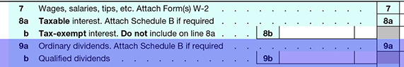

Ordinary and Qualified Dividends
Ordinary dividends are entered on line 9a of Form 1040.

The distinction between ordinary dividends (taxed at ordinary income tax rates of up to 39.6%) and qualified dividends (taxed at a maximum of 20%) is of vital importance for any client receiving significant dividend income. Qualified dividend rates in 2016 follow:
- 20% - if the taxpayer is in the top ordinary income tax bracket of 39.6%
- 15% - if the taxpayer's ordinary income tax bracket is lower than 39.6% and higher than 15%
- 0% - if the taxpayer's ordinary income tax bracket is 15% or less
While qualified dividends are included in line 9(a), note that they are segregated out on line 9(b) to facilitate identifying them and applying the lower rate when it comes time to compute the tax.
To qualify for this special tax rate as a qualified dividend, the following conditions must be met:
- The dividends must have been paid by a U.S. corporation or a qualified foreign corporation.
- The dividends are not of type listed by the IRS as "dividends that are not qualified dividends." This includes dividends that are:
- Capital gain distributions
- Dividends paid on deposits paid by banks and savings and loans (these amounts are reported as interest)
- Dividends from tax-exempt organizations or a farmer's cooperative.
- Dividends paid by a corporation on employer securities that are held through an employee stock ownership plan (ESOP) maintained by that organization
- The taxpayer must meet the holding period described below.